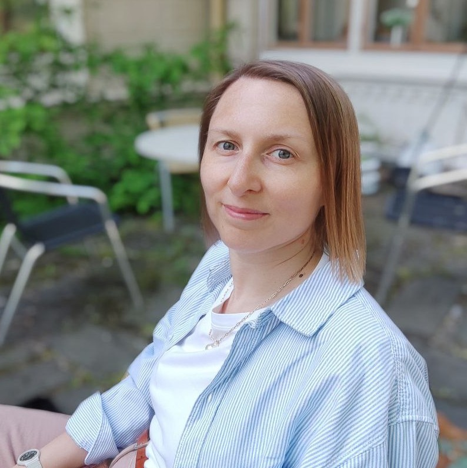

Hi, I'm Katya, a full-stack developer based in Finland.
My path into software development started with studying Business Information Technology at Lapland University of Applied Sciences, where I became especially interested in building web applications from frontend interfaces to backend logic and data.
In 2024, I joined Nuuka Solutions, first for my thesis and later as a frontend developer intern. I worked on a React application that helped building managers visualize sensor data, identify anomalies and improve energy efficiency. The application was later taken into production, which was an important milestone for me as a developer.
After graduating in 2025, I continued building my skills through independent projects and web development work. Most recently, I helped design and develop the public website for Ilonlähde ry, focusing on usability, structure, SEO and analytics.
Today, I build full-stack projects with React, TypeScript, Node.js, Express and SQL databases. I enjoy creating useful, intuitive applications where good design and solid functionality come together.
Thanks for stopping by.
